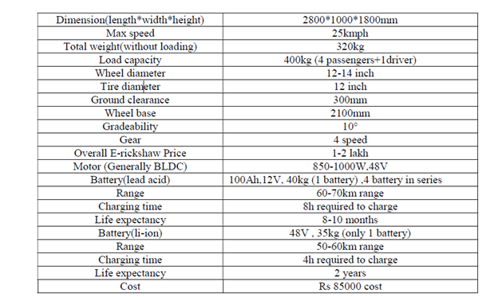
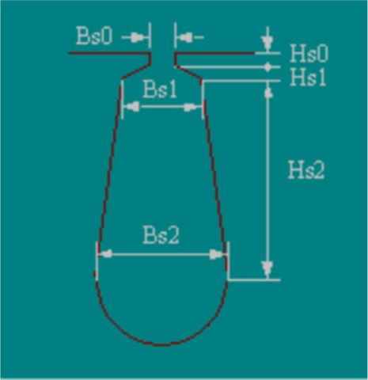
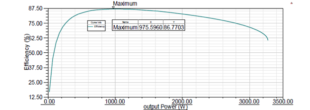
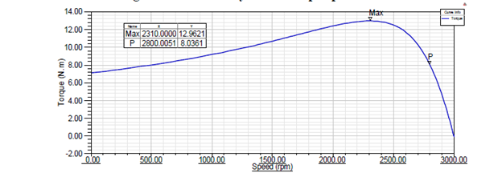
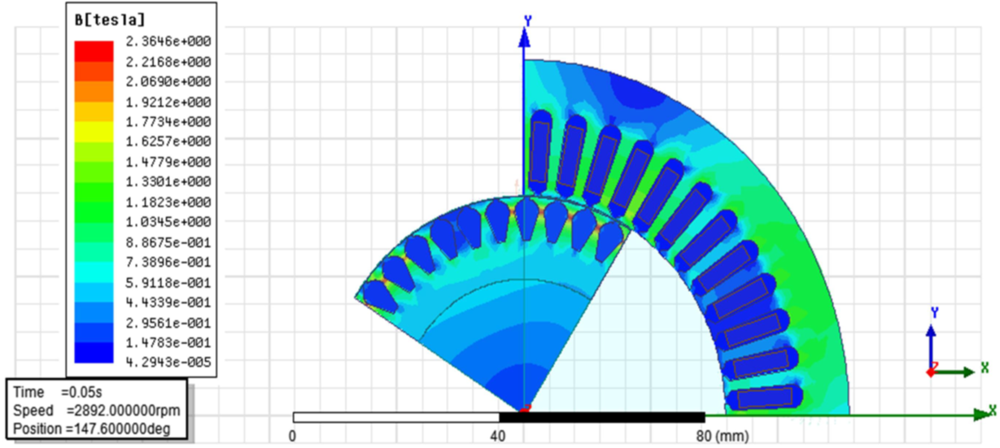

High-Performance Induction Motor Design for E-Rickshaw: An Engineering Analysis
Introduction
As electric mobility becomes increasingly important, especially in developing countries, E-rickshaws have emerged as a key sustainable transportation mode. Traditionally, Brushless DC (BLDC) motors dominate this space due to their efficiency and high torque. However, their dependence on rare-earth magnets increases costs and supply chain risks. This project presents an alternative: a high-performance induction motor (IM) specifically designed for E-rickshaws, eliminating rare-earth dependencies and reducing operational costs.
Objective
To design, optimize, and validate a robust and cost-effective induction motor tailored specifically for the operational demands of E-rickshaws using ANSYS Maxwell simulations.
Design Methodology
The induction motor design is based on thorough analysis of the typical Indian E-rickshaw driving cycle, considering factors like vehicle speed, payload, gradeability, and real-world operational conditions.
Key design considerations included:
- Selection of optimum power and torque ratings aligned with actual E-rickshaw performance needs.
- A higher base frequency (100 Hz instead of conventional 50-60 Hz) to reduce motor size and improve torque and power density.
- Detailed parametric studies using ANSYS Maxwell for electromagnetic optimization.

Suggested Figure: Table 4.1: Specification of E-rickshaw
Electromagnetic Design and Simulation
The motor's electromagnetic characteristics were meticulously optimized using ANSYS Maxwell. Key parameters such as rotor and stator dimensions, slot geometry, and winding configurations were carefully tuned to achieve target performance metrics:
- Air-gap flux densities and current densities were controlled to avoid magnetic saturation and excessive heating.
- Stator slot dimensions optimized to maximize efficiency and minimize harmonic losses.
- Rotor slot designs enhanced torque output and improved efficiency.

Figure 4.1: Stator slot dimensions

Figure 4.2: Rotor slot dimensions
Thermal and Structural Analysis
Given the harsh operational environment of E-rickshaws, the thermal performance of the induction motor was crucial. The design ensured:
- Adequate heat dissipation through optimized current densities and slot-fill factors.
- Robust materials selection, capable of handling the thermal stresses associated with continuous urban operation.
Additional Suggested Visual: A thermal distribution plot (not included in the original document) to visually demonstrate thermal robustness.
Simulation Results and Performance Validation
Simulations in ANSYS Maxwell provided clear validation of the design, showing:
- A balanced torque-speed profile suitable for typical urban and semi-urban E-rickshaw driving conditions.
- High efficiency (~85.55%) and stable operation across typical loading conditions.
- Reduced torque ripple and stable transient performance, essential for passenger comfort and reliability.

Figure 5.1: Efficiency vs Output Power

Figure 5.2: Torque vs Speed Curve

Figure 5.5: Flux Density Plot
Application Impact
The designed induction motor offers significant advantages for E-rickshaw applications:
-
Cost-effectiveness :Eliminating rare-earth materials significantly reduces production and operational costs.
-
Reliability :The robust and mature induction motor technology promises longer operational lifetimes with minimal maintenance.
-
Environmental Sustainability :Enhanced efficiency reduces overall energy consumption and emissions.
-
Local Manufacturing :The simplified design supports local manufacturing capabilities, reducing dependency on imported components.
Conclusion
This induction motor design addresses the practical needs of the rapidly growing E-rickshaw market. By effectively leveraging ANSYS Maxwell for electromagnetic and thermal optimizations, the proposed motor successfully matches the performance of conventional BLDC motors while significantly reducing cost and environmental impact. It offers an innovative, sustainable solution ready for prototyping and commercial adoption in electric urban transportation.